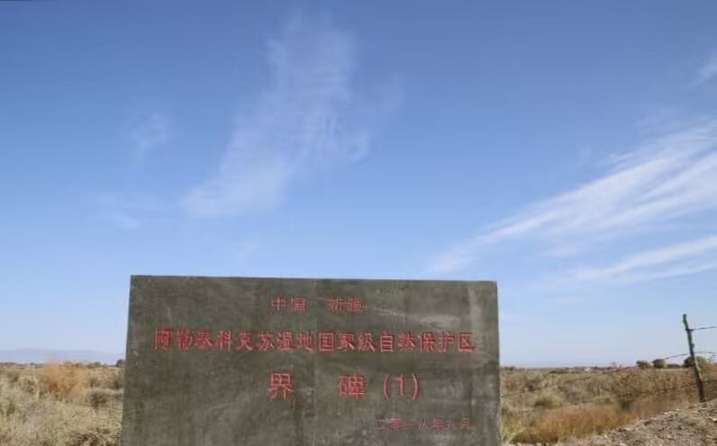
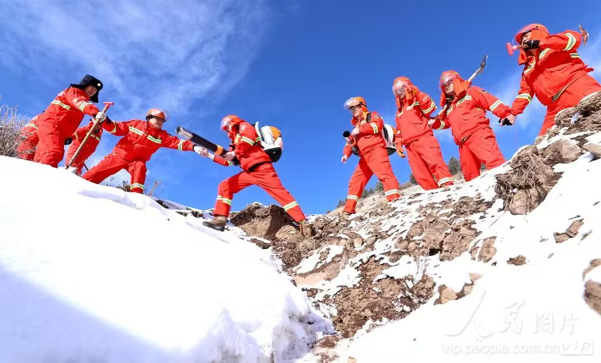
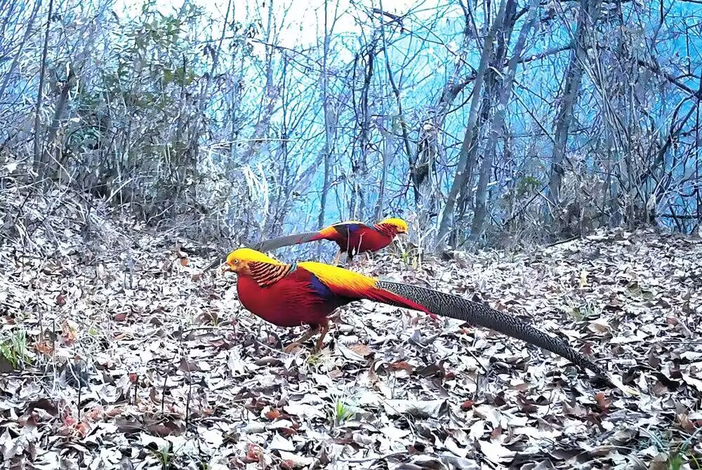

羽翼守望者


截至2023年，全球已建立超过26万个陆地和海洋保护区，覆盖约16%的陆地面积和7%的海洋（IUCN）。这些保护区为全球超过70%的受威胁鸟类提供了关键栖息地。例如，中国的大熊猫国家公园不仅保护了大熊猫，也庇护了绿尾虹雉、红腹角雉等多种珍稀鸟类。
保护区的设计应科学合理，尽可能涵盖物种的完整生活史区域，并建立廊道连通孤立斑块，防止种群隔离。

然而，许多保护区面临“纸上保护”的困境，由于经费不足、管理不善，非法狩猎和栖息地破坏仍时有发生。有效的管理需要社区共管、执法监督和科学监测相结合。
鸟类是保护区管理成效的重要指示生物。通过长期监测鸟类种群动态，可以评估管理措施的有效性，并及时调整保护策略。

在中国，自然保护区体系已初具规模，但许多保护区面积偏小、破碎化严重。未来应推动以国家公园为主体的保护地体系建设，整合相邻保护区，形成生态保育网络。
📖 参考文献：点此处 查看世界自然保护联盟（IUCN）保护区数据库。